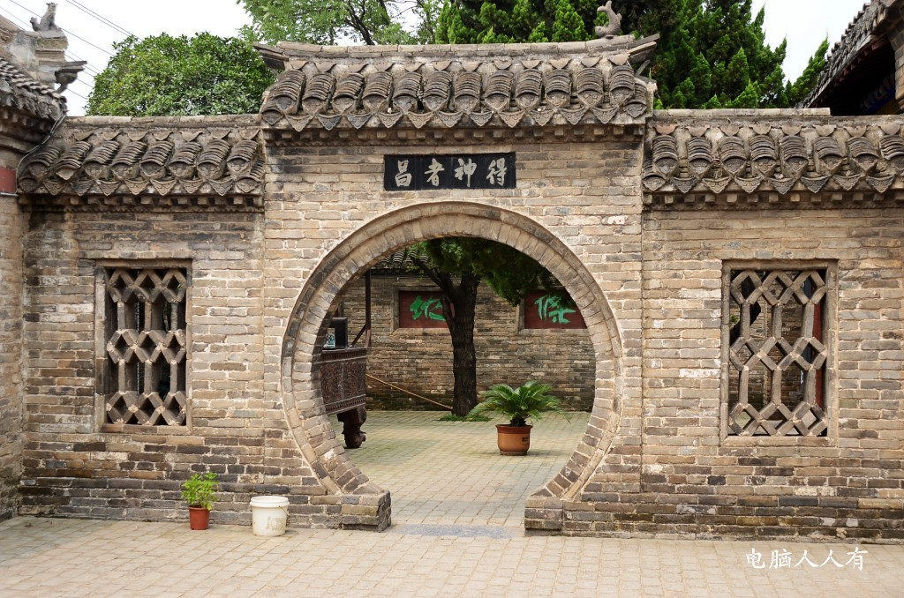
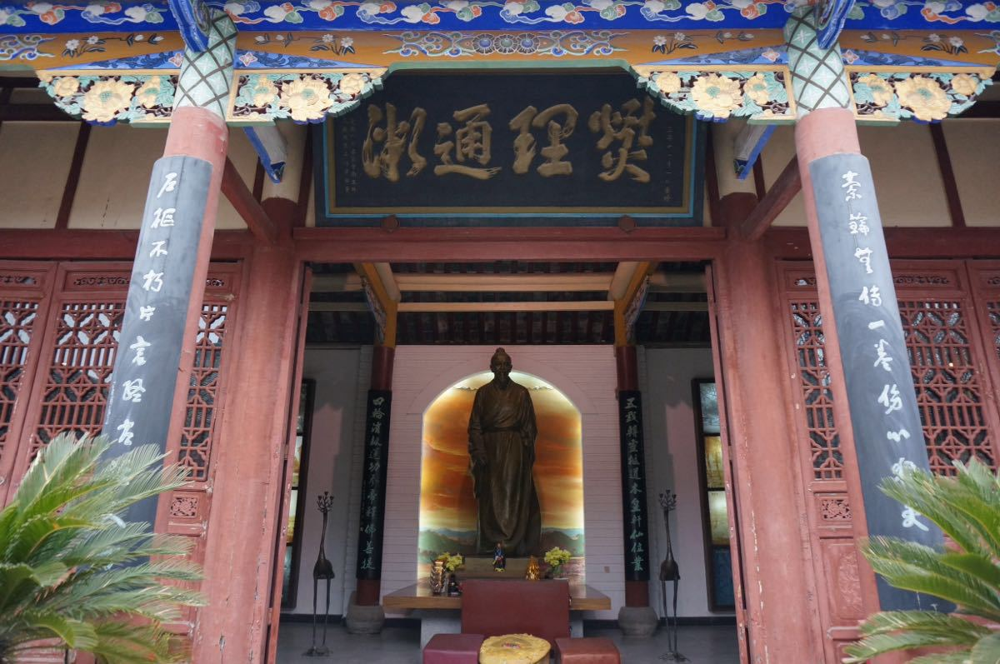
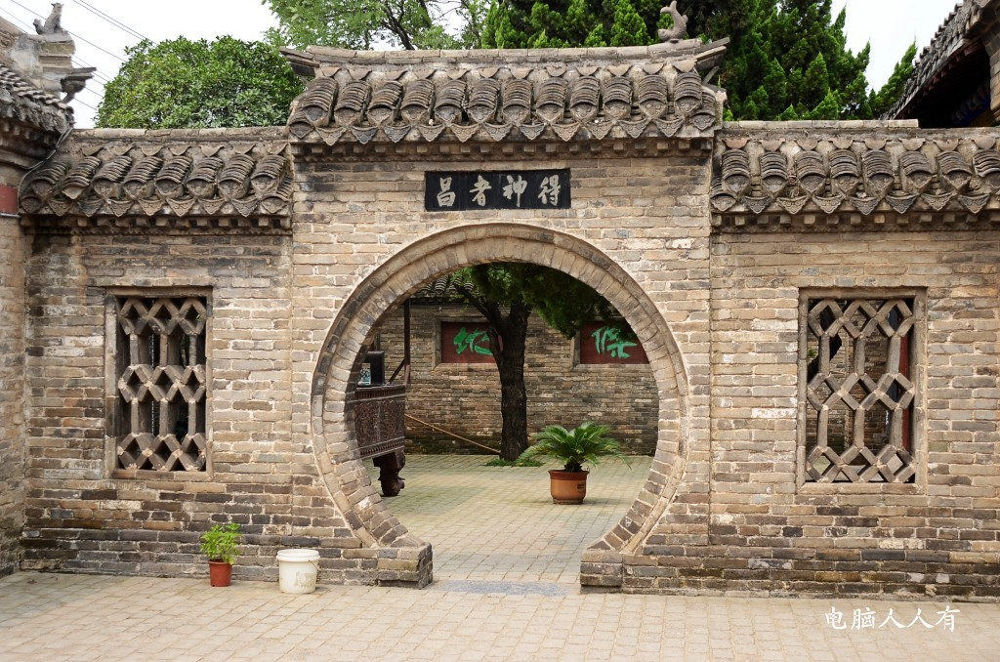
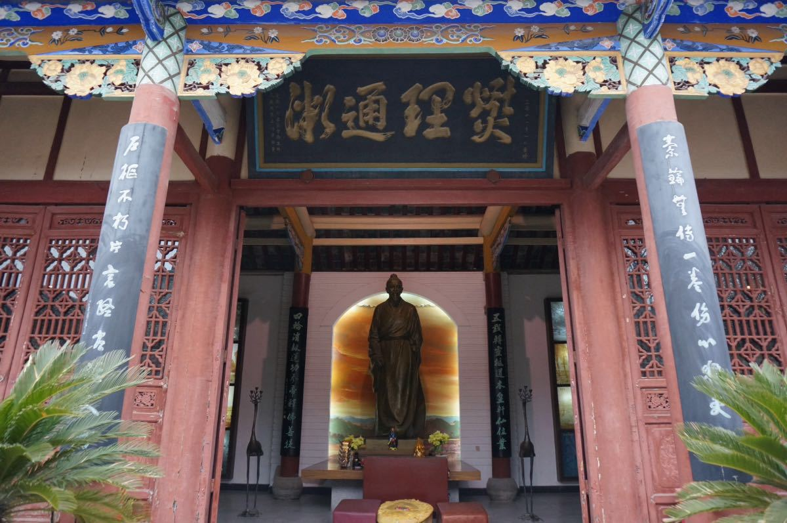

简介
华祖庵，又名华祖庙，位于安徽省亳州市永安街12号。始建于唐天佑元年（904年），是为祭祀中国东汉时期的医药学家华佗建立的庙祠。因庙的历代住持皆为女僧，因此成为庵。华祖庵是传统的“三厢两厅正堂屋"结构，以挑檐式建筑为主；华祖庵总占地1.3万平方米，有山门、耳房、大殿、东西殿、禅房、元化草堂、存珍斋、益寿轩、课徒馆、自怡亭、五禽戏台、药圃、洗芝池、碑廊等建筑。
历史沿革
华祖庵始建于唐天佑元年（904年）。
清乾隆二十六年（1761年），民间集资对华祖庵修缮。
嘉庆二年（1797年）复修，同治年间再次修缮。
1962年，亳县人民政府拨款对华祖庵进行维修，增设华佗纪念馆，郭沫若题为纪念馆题名。
1980年，亳州县政府对华祖庵拨款维修。
2008年，亳州市委市政府在原华祖庵的基础上增设华佗中医药文化博物馆。
2009年9月9日，华佗中医药文化博物馆正式开馆。
建筑格局
华祖庵是传统的“三厢两厅正堂屋"结构，以挑檐式建筑为主，华祖庵山门前有双狮雄踞，进入庙祠内有东西两个大殿，穿过自怡亭径直进入是元化草堂，元化草堂立于高台之上，回廊联通东西，东厢名“益寿轩”。元化草堂的西厢“存珍斋”为华佗的药房和看病的地方，分别系挂着中国历代名医画像和其乡土别传以及国内外专家学者的题词和绘画。整个院落回廊相接，绕过画廊，进入古药园，因地制宜布置水池、小桥、假山、亭榭、树木等。华祖庵的花园小路旁种有芍药、牡丹、白菊、曼陀罗、玫瑰棕榈等名贵中药草及花卉。
历史文化
华佗字元化，一名敷。安徽亳州人，华佗精研歧黄，并通数经。一生不慕利禄，走街串巷、寻求方药，为人闻疾、济世活人。在1600多年前华佗就创用酒服“麻沸散”施行剖腹手术，华佗被称为外科鼻祖。又创编“五禽戏”以养生保健，开辟了中国体育医疗的先河，华佗济世救人、医德高尚，后人颂为神医。
 


